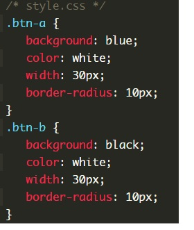
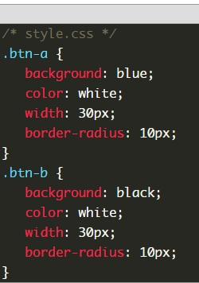
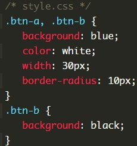
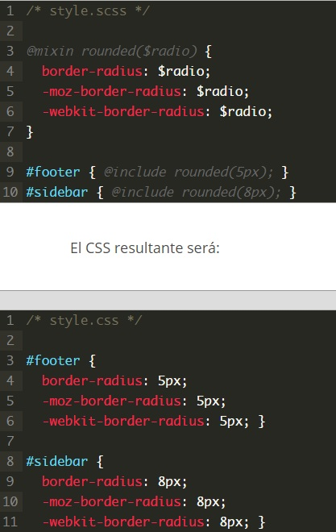

mixin
¿Para qué valen los Mixins?
Los Mixins te permiten reutilizar estilos (propiedades e incluso selectores) sin tener que copiarlos y pegarlos cada vez que quieres utilizarlos.Por ejemplo, supongamos que tenemos un estilo básico para los botones de nuestra web pero tenemos luego dos colores diferentes según la ubicación del botón:
Como vemos, todo se repite salvo el color de fondo. Este es un ejemplo de repetición de código que probablemente queramos evitar en nuestra hoja .scss, y lo podemos hacer gracias a los Mixins (en el siguiente artículo veremos también otra opción para hacerlo, Extend, quizás incluso más recomendada para el caso que acabamos de ver)
Como crear un mixin
Para escribir un Mixin lo hacemos escribiendo @Mixin seguido por el nombre del mismo. Por ejemplo, para el caso anterior, escribiríamos en el Mixin las propiedades que repetíamos. Y luego en cada botón incluimos el Mixin con @include:
Puntos a tener en cuenta
- Como regla general está bien escribir primero el @include y luego poner las propiedades singulares (como background: black;) para poder sobreescribir alguna de las que nos trae el Mixin si fuera necesario.
- Asegúrate que el @Mixin está declarado antes de usar los @include. Por ejemplo, puedes crear un parcial (partial) que se llame _mixins.scss y lo importamos antes del resto de parciales
- @include no es lo mismo que @import. Con @include incluimos un mixin, mientras que con @import incluimos un archivo.
El resultado en el css seria este.
Estaréis de acuerdo conmigo que el CSS generado no es muy bueno. Aunque en el archivo .scss no estábamos repitiendo código, en el archivo .css resultante sí lo estamos haciendo. Sería mucho mejor generar algo así:
Pero esto no lo podemos hacer con Mixins, sino con Extend, Lo que acabamos de ver sin embargo nos sirve apara ver cómo funcionan los Mixins y para qué no son útiles.
Cuándo usar los Mixins: Argumentos
El poder real de los Mixins está en que podemos pasar argumentos a los mismos. Los argumentos se declaran como una lista de variables dentro de un paréntesis. A cada una de estas variables se le asigna un valor cada vez que se usa el mixin. De esta manera no generaremos código repetido cada vez que lo usemos, ya que gracias a los argumentos podemos obtener un código singular para cada caso.
Por ejemplo, un Mixin sencillo para border-radius:
Como vemos hemos creado un Mixin llamado rounded que tiene como argumento $radio, que es el radio que se aplicará en border-radius.
